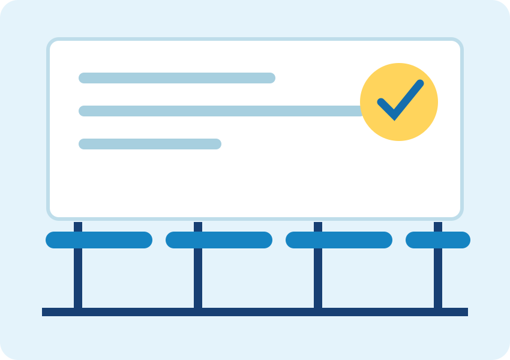

Presencial e onlineModalidades adaptáveis
Turmas disponíveis
Seu próximo passo começa aqui
Aprender abre portas. Viva novas oportunidades.
Ensino próximo, metodologia moderna e aprendizado que acompanha cada etapa da sua evolução.
Instituição e condições demonstrativas para personalização.Hello!
¡Hola!

Aprendizado que conectaPrática, troca e evolução
Aulas dinâmicasConteúdo para a vida real
Acompanhamento próximoEvolução em cada etapa
Encontre o curso ideal
Idiomas para cada objetivo
Uma estrutura flexível para apresentar modalidades, públicos e jornadas de aprendizado oferecidas pela instituição.
Jovens e adultos
Inglês
Desenvolva comunicação e confiança para situações do cotidiano.
Presencial ou onlineConhecer o curso →Jovens e adultos
Espanhol
Aprenda a se comunicar com naturalidade em diferentes contextos.
Presencial ou onlineConhecer o curso →Para crianças
Inglês divertido
Descobertas, jogos e atividades que aproximam a criança do idioma.
Aprendizado lúdicoConhecer o curso →Prática intensiva
Conversação
Mais fluidez e segurança para falar sobre temas relevantes.
Encontros práticosConhecer o curso →Objetivo específico
Para viagens
Vocabulário essencial para aproveitar cada experiência com autonomia.
Conteúdo aplicadoConhecer o curso →Carreira e negócios
Inglês profissional
Comunicação aplicada a reuniões, apresentações e oportunidades.
Foco profissionalConhecer o curso →Para cada fase da vida
Um idioma acompanha onde você quer chegar
Crianças
Contato leve e estimulante com uma nova língua.
Adolescentes
Confiança para estudos, cultura e novas conexões.
Adultos
Aprendizado alinhado aos objetivos pessoais.
Profissionais
Comunicação para ampliar possibilidades na carreira.
Empresas
Programas adaptáveis às necessidades das equipes.
Metodologia Viva
Aprender fazendo.
Evoluir com confiança.
Uma proposta demonstrativa baseada em participação, contexto e acompanhamento, que pode ser adaptada ao método real de cada escola.
Experimente uma aula →- 01
Conversação desde o início
O idioma aparece em situações práticas desde as primeiras etapas.
- 02
Conteúdo para o cotidiano
Temas que conectam aprendizado, interesses e objetivos reais.
- 03
Acompanhamento da evolução
Orientação próxima para reconhecer avanços e próximos passos.
- 04
Aulas dinâmicas
Prática, interação e diferentes recursos para manter o envolvimento.
Por que escolher a escola?
Uma experiência feita para acolher e desenvolver
Diferenciais ilustrativos que devem ser revisados conforme a estrutura e os serviços reais da instituição.
Professores próximos
Orientação atenta durante toda a jornada.
Turmas reduzidas
Condições sujeitas à organização da escola.
Evolução acompanhada
Feedbacks para apoiar os próximos passos.
Horários flexíveis
Opções conforme disponibilidade institucional.
Presencial e online
Modalidades para diferentes rotinas.
Ambiente acolhedor
Espaço pensado para aprender e participar.
Quem ensina, inspira
Conheça o time docente
Perfis demonstrativos preparados para receber fotos, formações e apresentações reais da equipe.
Perfil demonstrativo
Professora Marina
Idiomas e conversaçãoPerfil demonstrativo
Professor Rafael
Idiomas e comunicação profissionalEspaços para aprender
Uma experiência que vai além da sala de aula.
Galeria pronta para mostrar ambientes, atividades, eventos e momentos reais da instituição.

Histórias que podem inspirar
Espaço para depoimentos reais
Ao personalizar, utilize somente avaliações autorizadas e verdadeiras.
“Insira aqui o relato verdadeiro de um aluno sobre sua experiência de aprendizado.
“Este espaço pode apresentar a percepção real de pais, responsáveis ou profissionais.
Mapa da instituiçãoIncorporar endereço real na personalização
Localização e atendimento
Venha conhecer nosso espaço
- Endereço
- Endereço demonstrativo — substituir pelos dados reais
- Atendimento
- Horários a definir conforme a instituição
- Modalidades
- Presencial e online — confirmar disponibilidade
- Contato
- WhatsApp e telefone placeholders
Dúvidas frequentes
Antes de começar, saiba mais
As condições abaixo são genéricas e devem ser adequadas às regras reais da instituição.
A necessidade e o formato da avaliação dependem da metodologia adotada pela instituição.
O protótipo prevê cursos para diferentes níveis; confirme as turmas disponíveis com a escola.
Este modelo apresenta uma modalidade infantil que deve ser adaptada à oferta real da instituição.
Modalidades e formatos dependem da disponibilidade e da estrutura de cada escola.
Consulte a instituição sobre disponibilidade, formato e condições para uma experiência inicial.
Os horários variam conforme curso, nível, modalidade e formação das turmas.
O mundo espera por você
Comece hoje a construir novas possibilidades.
Converse com a equipe e descubra cursos e turmas disponíveis.
Quero saber mais pelo WhatsApp